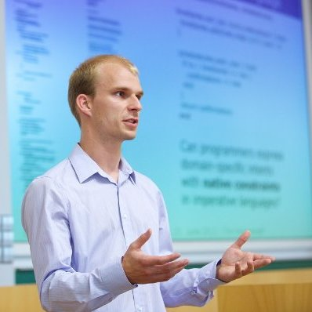

I am a member of the GraalVM team at Oracle Labs. I was led here by my interests in programming languages and virtual machine design, and my involvement with the PyPy/RPython project and various other dynamic language VMs. My work revolves around dynamic language interoperability, connecting them with native C code in a safe manner, and providing cross-language tool support. I also continue to collaborate with the Hasso Plattner Institute at the University of Potsdam on tools and environments for dynamic languagues and polyglot programming.
Dr.rer-nat., Hasso Plattner Institute, University of Potsdam, Potsdam, Germany
grade: summa cum laude
advisor: Robert Hirschfeld, Hasso Plattner Institute, University of Potsdam
additional reviewers:
Wolfgang de Meuter, Vrije Universiteit Brussel
Alan Kay, Viewpoints Research Institute
In my thesis I presented Babelsberg, a formal design with multiple implementations for object-constraint programming to integrate constraint declaration and continuous satisfaction with mutable object-oriented structures and behavior.
M.Sc., Hasso Plattner Institute, University of Potsdam, Potsdam, Germany
final grade: 1.0 (A+)
During my master's studies, I focused on programming language concepts to facilitate development tools, end-user programming, modularity, and meta-circularity especially in distributed and parallel programming settings.
B.Sc., Hasso Plattner Institute, University of Potsdam, Potsdam, Germany
final grade: 1.4 (A)
Senior Software Engineer, Oracle Labs Germany, Potsdam, Germany
At Oracle Labs I am a member of the Truffle/Graal group working on virtual machine technology for dynamic languages. I am the team lead for the high-performance Python implementation on GraalVM. I am also the initiator for multiple research collaborations with the Hasso Plattner Institute on tools and environments for polyglot programming and with the University of Cape Town on native extension APIs for managed programming runtimes.
Research Assistant, Hasso Plattner Institute, University of Potsdam, Potsdam, Germany
My research focused on novel programming paradigms, virtual machines for dynamic programming languages, and end-user programming with a special interest in computer science education for children.
Ph.D. Student, Hasso Plattner Institute, University of Potsdam, Potsdam, Germany
My Ph.D. research focused on object-constraint programming, a novel approach at combining constraint solvers with dynamic, object-oriented languages in a clean and powerful way.
Research Visit, Nanjing University, Nanjing, China
At Nanjing University I collaborated with researchers on emotion analysis in Twitter-like social networks.
Working Student, Finn GmbH, Berlin, Germany
At Finn GmbH I was involved in plugin development for Redmine.
Working Student, Hasso Plattner Institute, Potsdam, Germany
I was a tutor at the Software Architecture Group, assisting the staff with undergraduate lectures on software engineering and software development methodologies, using Squeak/Smalltalk as the educational language.
Intern, VMware, Beaverton, OR, USA
At VMware I was working on the MagLev Ruby VM built on top of the distributed GemStone/S Smalltalk object database system.
Ruby Summer of Code Participant
As part of the 2010 Ruby Summer of Code, I built out prototype work by Wayne Meissner to add support for Ruby C extensions to JRuby.
The documents provided here are included by me as contributing author as a means to ensure access to the work for personal, non-commercial use. They are not for redistribution. These are the author versions of the papers, the definitive versions are published in the relevant proceedings. Copyright and all rights therein are maintained by the authors or by other copyright holders, notwithstanding that they have offered their works here electronically. It is understood that all persons copying this information will adhere to the terms and constraints invoked by each author's copyright. These works may not be reposted without the explicit permission of the copyright holder.
Clément Béra, Eliot Miranda, Tim Felgentreff, Marcus Denker, and Stéphane Ducasse. “Sista: Saving Optimized Code in Snapshots for Fast Start-up”. In Proceedings of the 14th International Conference on Managed Languages and Runtimes, Manlang 2017, Prague, Czech Republic, September 27 - 29, 2017, 1–11, 2017. doi:10.1145/3132190.3132201https://doi.org/10.1145/3132190.3132201.
Tim Felgentreff. “Checks and Balances: Object-Constraints Without Surprises”. In Proceedings of the 9th Ph.d. Retreat of the Hpi Research School on Service-Oriented Systems Engineering. Tech. rep. 100. Hasso Plattner Institute, 2016.
Tim Felgentreff. “Implementing an Object-Constraint Extension Without Vm Support”. In Proceedings of the 8th Ph.d. Retreat of the Hpi Research School on Service-Oriented Systems Engineering. Tech. rep. 95. Hasso Plattner Institute, 2015.
Felgentreff, Tim, ed. Proceedings of the 14th ACM SIGPLAN International Symposium on Dynamic Languages, DLS 2018, Boston, Ma, Usa, November 6, 2018. ACM, 2018. doi:10.1145/3276945https://doi.org/10.1145/3276945.
Tim Felgentreff. “Specifying Multi-Domain Constraints on Object-Behavior”. In Proceedings of the 7th Ph.d. Retreat of the Hpi Research School on Service-Oriented Systems Engineering. Tech. rep. 83. Hasso Plattner Institute, 2014.
Tim Felgentreff. “The Design and Implementation of Object-Constraint Programming”. PhD thesis, University of Potsdam, Germany, 2017http://d-nb.info/1136085963.
Felgentreff, Tim, and Olivier Zendra, eds. Proceedings of the 13th Workshop on Implementation, Compilation, Optimization of Object-Oriented Languages, Programs and Systems, Icooolps@ECOOP 2018, Amsterdam, Netherlands, July 16-21, 2018. ACM, 2018. doi:10.1145/3242947https://doi.org/10.1145/3242947.
Tim Felgentreff, Alan Borning, and Robert Hirschfeld. “Babelsberg: Specifying and Solving Constraints on Object Behavior”. Tech. rep. 2013-001. Viewpoints Research Institute, May 2013.
Tim Felgentreff, Alan Borning, and Robert Hirschfeld. “Specifying and Solving Constraints on Object Behavior”. Journal of Object Technology (JOT) 13, no. 4 (2014): 1–38. doi:10.5381/jot.2014.13.4.a1public/uni/FelgentreffJOT2014.pdf.
Tim Felgentreff, Alan Borning, Robert Hirschfeld, Jens Lincke, Yoshiki Ohshima, Bert Freudenberg, and Robert Krahn. “Babelsberg/JS: A Browser-Based Implementation of an Object Constraint Language”. In ECOOP, 411–36. Springer, 2014. doi:10.1007/978-3-662-44202-9_17public/uni/FelgentreffECOOP2014.pdf.
Tim Felgentreff, Robert Hirschfeld, Alan Borning, and Millstein Todd. “Babelsberg/RML: Executable Semantics and Language Testing with RML”. Tech. rep. 103. Hasso Plattner Institut, 2016.
Tim Felgentreff, Robert Hirschfeld, Maria Graber, Alan Borning, and Hidehiko Masuhara. “Declaring Constraints on Object-Oriented Collections”. Journal of Information Processing 24, no. 6 (2016): 917–27. doi:10.2197/ipsjjip.24.917public/uni/FelgentreffIPSJJIP2014.pdf.
Tim Felgentreff, Stefan Lehmann, Robert Hirschfeld, Sebastian Gerstenberg, Jakob Reschke, Lars Rückert, Patrick Siegler, Jan Graichen, Christian Nicolai, and Malte Swart. “Automatically Selecting and Optimizing Constraint Solver Procedures for Object-Constraint Languages”. In Constrained and Reactive Objects Workshop (CROW), 65–72. MODULARITY Companion 2016. ACM, 2016. doi:10.1145/2892664.2892671public/uni/FelgentreffCROW2016.pdf.
Tim Felgentreff, Jens Lincke, Robert Hirschfeld, and Lauritz Thamsen. “Lively Groups: Shared Behavior in a World of Objects Without Classes or Prototypes”. In Future Programming Workshop (FPW), 15–22. ACM, 2015. doi:10.1145/2846656.2846659public/uni/FelgentreffFPW2015.pdf.
Tim Felgentreff, Todd Millstein, and Alan Borning. “Developing a Formal Semantics for Babelsberg: A Step-by-Step Approach”. Tech. rep. 2014-002. Viewpoints Research Institute, September 2014.
Tim Felgentreff, Todd Millstein, Alan Borning, and Robert Hirschfeld. “Checks and Balances — Constraint Solving Without Surprises in Object-Constraint Programming Languages: Full Formal Development”. Tech. rep. 2015-001. Viewpoints Research Institute, 2015public/uni/FelgentreffVPRI2015.pdf.
Tim Felgentreff, Todd Millstein, Alan Borning, and Robert Hirschfeld. “Checks and Balances: Constraint Solving Without Surprises in Object-Constraint Programming Languages”. In Proceedings of the 2015 Acm International Conference on Object Oriented Programming Systems Languages & Applications, 771–86. OOPSLA’15. ACM, 2015. doi:10.1145/2814270.2814311public/uni/FelgentreffOOPSLA2015.pdf.
Tim Felgentreff, Fabio Niephaus, Tobias Pape, and Robert Hirschfeld. “When a Mouse Eats a Python: Smalltalk-style Development for Python and Ruby”. In Workshop on Modern Language Runtimes, Ecosystems, and Vms (Morevms), 2017public/uni/FelgentreffMoreVMs2017.pdf.
Tim Felgentreff, Tobias Pape, Robert Hirschfeld, Anton Gulenko, and Carl Friedrich Bolz. “Language Independent Storage Strategies for Tracing JIT Based VMs”. In Proceedings of the 11th Acm Symposium on Dynamic Languages, 119–28. DLS ’15. ACM, 2015. doi:10.1145/2816707.2816716public/uni/PapeDLS2015.pdf.
Tim Felgentreff, Tobias Pape, Patrick Rein, and Robert Hirschfeld. “How to Build a High-Performance Vm for Squeak/Smalltalk in Your Spare Time: An Experience Report of Using the Rpython Toolchain”. In Proceedings of the 11th Edition of the International Workshop on Smalltalk Technologies, 21:1–21:10. IWST’16. ACM, 2016. doi:10.1145/2991041.2991062. Best Paper Awardpublic/uni/FelgentreffIWST2016.pdf.
Tim Felgentreff, Tobias Pape, Lars Wassermann, Robert Hirschfeld, and Carl Friedrich Bolz. “Towards Reducing the Need for Algorithmic Primitives in Dynamic Language VMs Through a Tracing JIT”. In Proceedings of the 10th Workshop on Implementation, Compilation, Optimization of Object-Oriented Languages, Programs and Systems, 7:1–7:10. ICOOOLPS’15. ACM, 2015. doi:10.1145/2843915.2843924public/uni/FelgentreffICOOOLPS2015.pdf.
Tim Felgentreff, Michael Perscheid, and Robert Hirschfeld. “Constraining Timing-Dependent Communication for Debugging Non-Deterministic Failures”. In Proceedings of the Workshop on Academic Software Development Tools and Techniques. WASDeTT’13, 2013public/uni/FelgentreffWASDETT2013.pdf.
Tim Felgentreff, Michael Perscheid, and Robert Hirschfeld. “Implementing Record and Refinement for Debugging Timing-dependent Communication”. Science of Computer Programming (SCICO) 134 (2017): 4–18. doi:10.1016/j.scico.2015.11.006public/uni/FelgentreffSCICO2017.pdf.
Bert Freudenberg, Dan H.H. Ingalls, Tim Felgentreff, Tobias Pape, and Robert Hirschfeld. “SqueakJS: A Modern and Practical Smalltalk That Runs in Any Browser”. In Proceedings of the 10th Acm Symposium on Dynamic Languages, 57–66. DLS ’14. ACM, 2014. doi:10.1145/2661088.2661100public/uni/FreudenbergDLS2014.pdf.
Maria Graber, Tim Felgentreff, Robert Hirschfeld, and Alan Borning. “Solving Interactive Logic Puzzles with Object-Constraints — an Experience Report Using Babelsberg/S for Squeak/Smalltalk”. In Workshop on Reactive and Event-Based Languages & Systems (REBLS), 2014public/uni/GraberREBLS2014.pdf.
Johannes Henning, Tim Felgentreff, and Robert Hirschfeld. “VM Wrapping: Fake It till You Make It”. In Proceedings of the 12th Workshop on Implementation, Compilation, Optimization of Object-Oriented Languages, Programs and Systems, Icooolps@ECOOP 2017, Barcelona, Spain, June 19, 2017, 2:1–2:4, 2017. doi:10.1145/3098572.3098576https://doi.org/10.1145/3098572.3098576.
Johannes Henning, Tim Felgentreff, Fabio Niephaus, and Robert Hirschfeld. “Toward Presizing and Pretransitioning Strategies for Graalpython”. In Conference Companion of the 4th International Conference on Art, Science, and Engineering of Programming, 41–45. <programming> ’20. New York, NY, USA: Association for Computing Machinery, 2020. doi:10.1145/3397537.3397564https://doi.org/10.1145/3397537.3397564.
Eva-Maria Herbst, Fabian Maschler, Fabio Niephaus, Max Reimann, Julia Steier, Tim Felgentreff, Jens Lincke, Marcel Taeumel, Robert Hirschfeld, and Carsten Witt. “ecoControl: Entwurf und Implementierung einer Software zur Optimierung heterogener Energiesysteme in Mehrfamilienhäusern”. Tech. rep. 93. Hasso Plattner Institute, 2015.
Robert Hirschfeld, Hidehiko Masuhara, Atsushi Igarashi, and Tim Felgentreff. “Visibility of Context-Oriented Behavior and State in L”. Journal of the Japan Society for Software Science and Technology (JJSSST) 32, no. 3 (2015): 149–59public/uni/HirschfeldJJSSST2014.pdf.
Robert Hirschfeld, Hidehiko Masuhara, Atsushi Igarashi, and Tim Felgentreff. “Visibility of Context-oriented Behavior and State in L”. In Proceedings of Japan Society for Software Science and Technology Annual Conference. JSSST’14. Nagoya, Aichi-ken, Japan, 2014.
Daniel Ingalls, Tim Felgentreff, Robert Hirschfeld, Robert Krahn, Jens Lincke, Marko Röder, Antero Taivalsaari, and Tommi Mikkonen. “A World of Active Objects for Work and Play: The First Ten Years of Lively”. In Proceedings of the 2016 Acm International Symposium on New Ideas, New Paradigms, and Reflections on Programming and Software, 238–49. Onward! 2016. ACM, 2016. doi:10.1145/2986012.2986029public/uni/IngallsONWARD2016.pdf.
Bastian Kruck, Stefan Lehmann, Christoph Kessler, Jakob Reschke, Tim Felgentreff, Jens Lincke, and Robert Hirschfeld. “Multi-Level Debugging for Interpreter Developers”. In Workshop on Language Modularity a La Mode (LaMOD), 91–93. MODULARITY Companion 2016. ACM, 2016. doi:10.1145/2892664.2892679public/uni/KruckLAMOD2016.pdf.
Bastian Kruck, Tobias Pape, Tim Felgentreff, and Robert Hirschfeld. “Crossing Abstraction Barriers when Debugging in Dynamic Languages”. In Proceedings of the Symposium on Applied Computing, 1498–1504. SAC’17. ACM, 2017. doi:10.1145/3019612.3019734public/uni/KruckSAC2017.pdf.
Stefan Lehmann, Tim Felgentreff, and Robert Hirschfeld. “Connecting Object Constraints with Context-Oriented Programming: Scoping Constraints with Layers and Activating Layers with Constraints”. In Proceedings of the 7th International Workshop on Context-Oriented Programming, 1–6. COP’15. ACM, 2015. doi:10.1145/2786545.2786549public/uni/LehmannCOP2015.pdf.
Stefan Lehmann, Tim Felgentreff, Jens Lincke, Patrick Rein, and Robert Hirschfeld. “Reactive Object Queries”. In Constrained and Reactive Objects Workshop (CROW), 23–28. MODULARITY Companion 2016. ACM, 2016. doi:10.1145/2892664.2892665public/uni/LehmannCROW2016.pdf.
Jens Lincke, Patrick Rein, Stefan Ramson, Robert Hirschfeld, Marcel Taeumel, and Tim Felgentreff. “Designing a Live Development Experience for Web-Components”. In Proceedings of the 3rd ACM SIGPLAN International Workshop on Programming Experience, Px/17.2, Vancouver, Bc, Canada, October 23-27, 2017, 28–35, 2017https://dl.acm.org/citation.cfm?id=3167109.
Fabio Niephaus, Tim Felgentreff, and Robert Hirschfeld. “GraalSqueak: A Fast Smalltalk Bytecode Interpreter Written in an AST Interpreter Framework”. In Proceedings of the 13th Workshop on Implementation, Compilation, Optimization of Object-Oriented Languages, Programs and Systems, Icooolps@ECOOP 2018, Amsterdam, Netherlands, July 16-21, 2018, edited by Tim Felgentreff and Olivier Zendra, 30–35. ACM, 2018. doi:10.1145/3242947.3242948https://doi.org/10.1145/3242947.3242948.
Fabio Niephaus, Tim Felgentreff, and Robert Hirschfeld. “GraalSqueak: Toward a Smalltalk-Based Tooling Platform for Polyglot Programming”. In Proceedings of the 16th Acm Sigplan International Conference on Managed Programming Languages and Runtimes, 14–26. MPLR 2019. New York, NY, USA: ACM, 2019. doi:10.1145/3357390.3361024http://doi.acm.org/10.1145/3357390.3361024.
Fabio Niephaus, Tim Felgentreff, and Robert Hirschfeld. Squimera: A Live, Smalltalk-Based Ide for Dynamic Programming Languages. Vol. Tech. rep. 120. Universitätsverlag Potsdam, 2018.
Fabio Niephaus, Tim Felgentreff, and Robert Hirschfeld. “Towards Polyglot Adapters for the Graalvm”. In Proceedings of the Conference Companion of the 3rd International Conference on Art, Science, and Engineering of Programming, 1–3, 2019.
Fabio Niephaus, Tim Felgentreff, Tobias Pape, and Robert Hirschfeld. “Efficient Implementation of Smalltalk Activation Records in Language Implementation Frameworks”. In Proceedings of the Conference Companion of the 3rd International Conference on Art, Science, and Engineering of Programming, 6:1–6:3. Programming ’19. New York, NY, USA: ACM, 2019. doi:10.1145/3328433.3328440http://doi.acm.org/10.1145/3328433.3328440.
Fabio Niephaus, Tim Felgentreff, Tobias Pape, and Robert Hirschfeld. “Squeak Makes a Good Python Debugger”. In Programming Experience 2017 (Px/17) Workshop. ACM, 2017public/uni/NiephausPX2017.pdf.
Fabio Niephaus, Tim Felgentreff, Tobias Pape, Robert Hirschfeld, and Marcel Taeumel. “Live Multi-Language Development and Runtime Environments”. CoRR abs/1803.10200 (2018)http://arxiv.org/abs/1803.10200.
Fabio Niephaus, Tim Felgentreff, Tobias Pape, Robert Hirschfeld, and Marcel Taeumel. “Live Multi-Language Development and Runtime Environments”. Programming Journal 2, no. 3 (2018): 8. doi:10.22152/programming-journal.org/2018/2/8https://doi.org/10.22152/programming-journal.org/2018/2/8.
Fabio Niephaus, Dale Henrichs, Marcel Taeumel, Tobias Pape, Tim Felgentreff, and Robert Hirschfeld. “SmalltalkCI: A Continuous Integration Framework for Smalltalk Projects”. In Proceedings of the 11th Edition of the International Workshop on Smalltalk Technologies, 1–9. IWST’16. ACM, 2016. doi:10.1145/2991041.2991044public/uni/NiephausIWST2016.pdf.
Fabio Niephaus, Matthias Springer, Tim Felgentreff, Tobias Pape, and Robert Hirschfeld. “Call-Target-Specific Method Arguments”. In Proceedings of the 10th Workshop on Implementation, Compilation, Optimization of Object-Oriented Languages, Programs and Systems, 5:1–5:4. ICOOOLPS’15. ACM, 2015. doi:10.1145/2843915.2843919public/uni/NiephausICOOOLPS2015.pdf.
Tobias Pape, Tim Felgentreff, and Robert Hirschfeld. “Optimizing Sideways Composition: Fast Context-Oriented Programming in Contextpypy”. In Proceedings of the 8th International Workshop on Context-Oriented Programming, 13–20. COP’16. ACM, 2016. doi:10.1145/2951965.2951967public/uni/PapeCOP2016.pdf.
Tobias Pape, Tim Felgentreff, Fabio Niephaus, and Robert Hirschfeld. “Let Them Fail: Towards Vm Built-in Behavior That Falls Back to the Program”. In Proceedings of the Conference Companion of the 3rd International Conference on Art, Science, and Engineering of Programming, 35:1–35:7. Programming ’19. New York, NY, USA: ACM, 2019. doi:10.1145/3328433.3338056http://doi.acm.org/10.1145/3328433.3338056.
Michael Perscheid, Tim Felgentreff, and Robert Hirschfeld. “Follow the Path: Debugging State Anomalies Along Execution Histories”. In Software Maintenance, Reengineering and Reverse Engineering (Csmr-Wcre), 2014 Software Evolution Week - Ieee Conference on, 124–33. IEEE, 2014. doi:10.1109/CSMR-WCRE.2014.6747162public/uni/PerscheidWCRE2014.pdf.
Patrick Rein, Stefan Ramson, Jens Lincke, Tim Felgentreff, and Robert Hirschfeld. “Group-Based Behavior Adaptation Mechanisms in Object-Oriented Systems”. IEEE Software 34, no. 6 (2017): 78–82. doi:10.1109/MS.2017.4121224https://doi.org/10.1109/MS.2017.4121224.
Alexander Riese, Fabio Niephaus, Tim Felgentreff, and Robert Hirschfeld. “User-Defined Interface Mappings for the Graalvm”. In Conference Companion of the 4th International Conference on Art, Science, and Engineering of Programming, 19–22. <programming> ’20. New York, NY, USA: Association for Computing Machinery, 2020. doi:10.1145/3397537.3399577https://doi.org/10.1145/3397537.3399577.
Bastian Steinert, Lauritz Thamsen, Tim Felgentreff, and Robert Hirschfeld. “Object Versioning to Support Recovery Needs: Using Proxies to Preserve Previous Development States in Lively”. In Proceedings of the 10th Acm Symposium on Dynamic Languages, 113–24. DLS ’14. ACM, 2014. doi:10.1145/2661088.2661093public/uni/SteinertDLS2014.pdf.
Daniel Stolpe, Tim Felgentreff, Christian Humer, Fabio Niephaus, and Robert Hirschfeld. “Language-Independent Development Environment Support for Dynamic Runtimes”. In Proceedings of the 15th Acm Sigplan International Symposium on Dynamic Languages, 80–90. DLS 2019. New York, NY, USA: ACM, 2019. doi:10.1145/3359619.3359746http://doi.acm.org/10.1145/3359619.3359746.
Marcel Taeumel, Tim Felgentreff, and Robert Hirschfeld. “Applying Data-Driven Tool Development to Context-Oriented Languages”. In Proceedings of 6th International Workshop on Context-Oriented Programming, 1–7. COP’14. ACM, 2014. doi:10.1145/2637066.2637067public/uni/TaeumelCOP2014.pdf.
Philipp Tessenow, Tim Felgentreff, Gilad Bracha, and Robert Hirschfeld. “Extending a Dynamic Programming Language and Runtime With Access Control”. Tech. rep. 107. Hasso Plattner Institut, 2016.
Lars Wassermann, Tim Felgentreff, Tobias Pape, Carl Friedrich Bolz, and Robert Hirschfeld. “Tracing Algorithmic Primitives in RSqueak/VM”. Tech. rep. 104. Hasso Plattner Institut, 2016.
Christopher Weyand, Jonas Chromik, Lennard Wolf, Steffen Kötte, Konstantin Haase, Tim Felgentreff, Jens Lincke, and Robert Hirschfeld. “Improving Hosted Continuous Integration Services”. Tech. rep. 108. Hasso Plattner Institut, 2017.